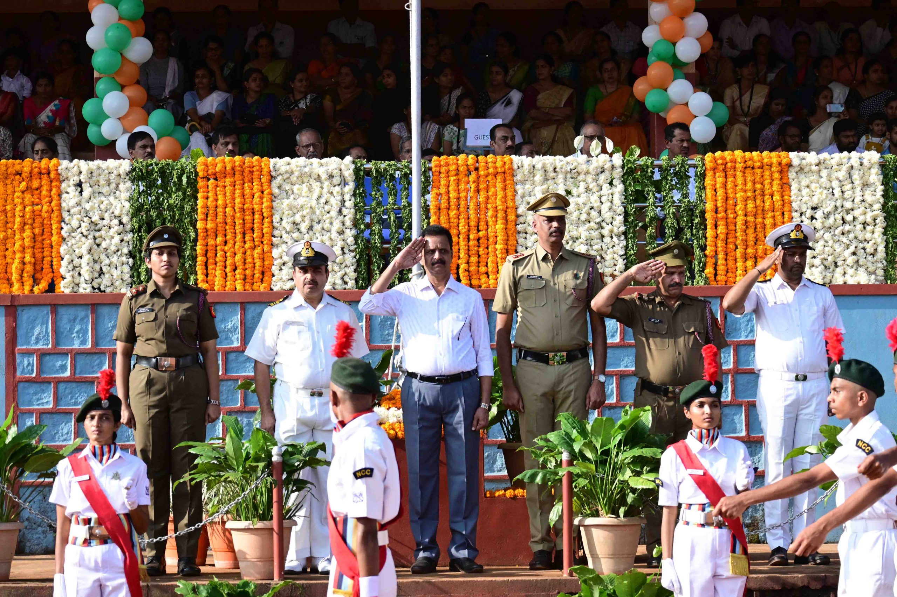
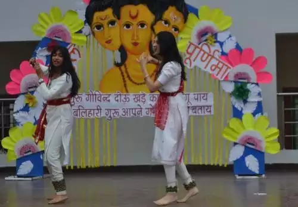
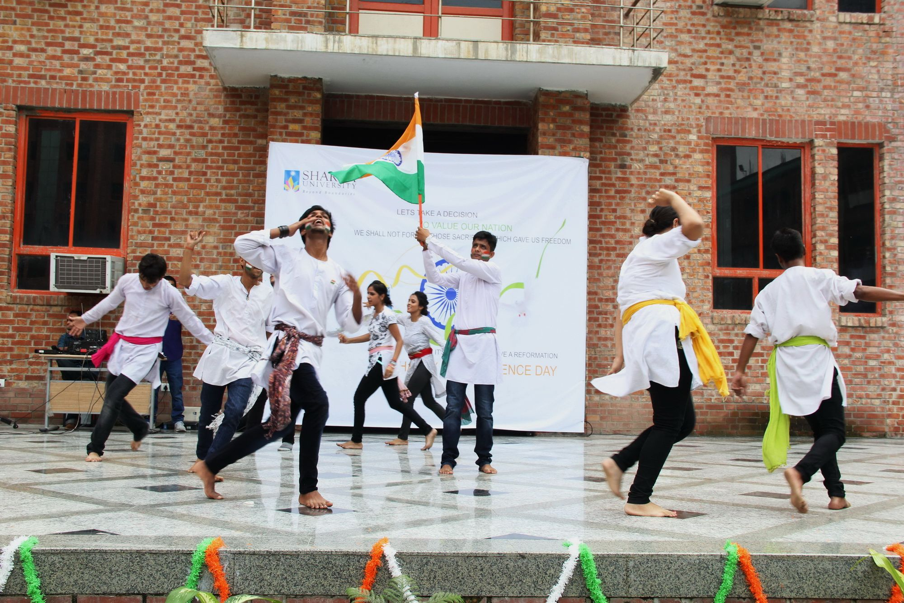
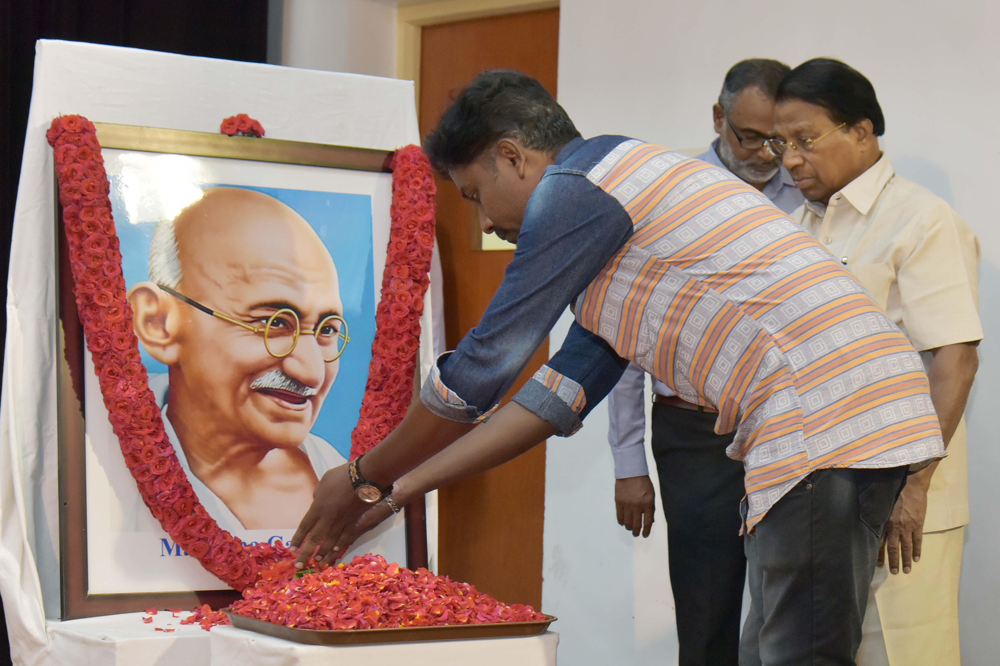

| Republic Day | ||
|---|---|---|
| In India, Republic Day commemorates the date on which the Constitution of India came into force replacing the Government of India Act 1935 as the governing document of India on 26 January 1950. The date of 26 January was chosen to honor the declaration of independence of 1930. It is one of the three national holidays in India. While the main parade takes place in the national capital, New Delhi, at the Rajpath before the president, the anniversary is also celebrated with varying degrees of formality in state capitals and other centers. |  | |
| Guru Purnima | ||
| The day of full moon, Purnima, in the month of Ashadh is traditionally celebrated as Guru Purnima by Hindus. Also known as Vyas Purnima, the day is celebrated in remembrance and veneration to sage Ved Vyas. He is the Adi (original) Guru of the Hindu Dharma, who classified the Vedas, wrote the eighteen Puranas and the Mahabharata. On this day, the Guru is offered Pujan (worship) by the disciples. First we shall consider the role of a Guru in life. |  | |
| Independence Day | ||
| On 15 August 1947, India attained freedom from the British Rule. Every year, August 15 is celebrated as the Independence Day in India. This national festival is celebrated with great enthusiasm all over the country. The Independence Day of any country is a moment of pride and glory. On this special occasion, rich tributes are paid to the freedom fighters who sacrificed their lives and fought to free their motherland from the clutches of the oppressors - British who ruled the country. |  | |
| Gandhi Jayanti | ||
| Gandhi Jayanti is celebrated on 2nd October every year to mark the birth anniversary of Mohandas Karamchand Gandhi, who was famously known as Mahatma Gandhi. Father of the Nation, as he was called, led India's freedom movement along with many other national leaders against the British rule in India. |  |